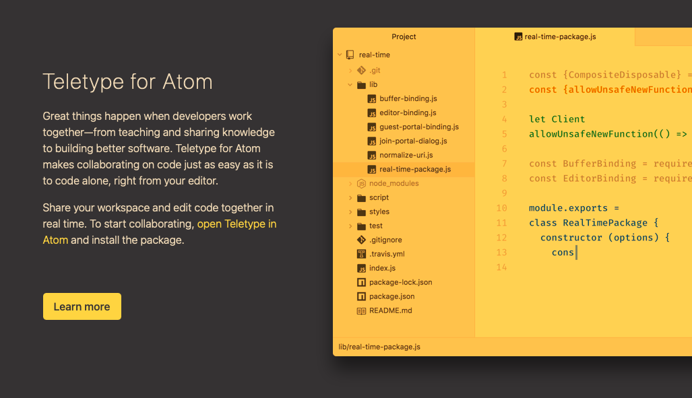
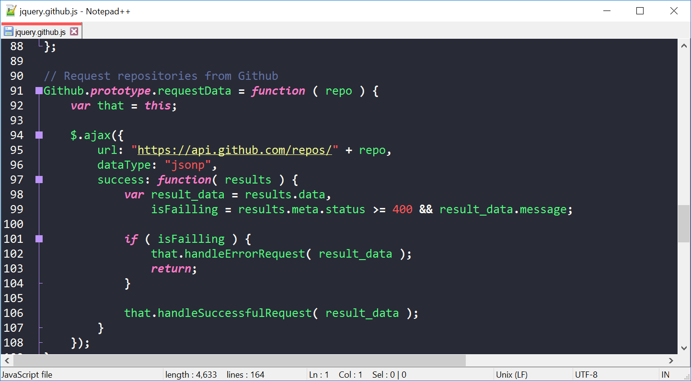

Топ лучших редакторов
Есть два основных типа:
- Текстовый. Классический вариант для тех, кто знаком с HTML-разметкой, знает теги, CSS-классы, умеет работать с контентом внутри страницы и понимает, как его оформлять. Эти навыки необходимы, так как в редакторе разработчик должен работать вручную, прописывая свойства с помощью текстовых параметров.
- Визуальный. Решение для тех, кто не понимает, что представляет собой HTML и как оформлять страницы с помощью текста. Обычно содержит в себе блоки, напоминающие конструктор. Перемещая их, пользователь может «собрать» полноценный сайт, не написав и строчки кода.
Еще есть среды для разработки. Это программы, созданные для профессиональных разработчиков и содержащие в себе весь спектр инструментов, необходимых для создания сайта или приложения с нуля. В этой статье я не буду их затрагивать.
Текстовые редакторы
Сперва рассмотрим HTML-редакторы для разработчиков. Для тех, кто понимает структуру страницы и может, используя HTML, разместить контент на сайте. Такие приложения дают больше свободы верстальщикам. Ведь благодаря возможностям разметки они получают полный контроль над информацией на ресурсе и его визуальной составляющей.
Atom
Атом появился в 2014 году и резко набрал популярность среди разработчиков всех сортов. Он бесплатный, с открытым исходным кодом. Его созданием занималась команда GitHub – главного хранилища кода в интернете. За поддержку и развитие проекта отвечает сообщество независимых программистов, продвигающих opensource-проекты.
 (Windows, macOS и Linux)Sublime Text
HTML-компилятор из Австралии, распространяющийся по условно-бесплатной модели. То есть сам редактор в базовом виде можно загрузить и использовать бесплатно, но чтобы получить весь набор доступных в нем функций, придется раскошелиться.
Sublime Text сочетает в себе лучшее из двух миров (из Open Source и мира проприетарного ПО). За счет платных лицензий и грамотной монетизации у разработчиков программы остается возможность регулярно обновлять продукт и поддерживать его. В то же время код достаточно «открыт», чтобы сторонние разработчики могли добавлять в него новые функции и создавать расширения, используя язык программирования Python.

Sublime Text – высокопроизводительный редактор. Причем это проявляется не только в плавности и отзывчивости интерфейса. В компиляторе есть функция моментального переключения между проектами. Не приходится долго искать папку с другим сайтом, перезагружаться в другую среду разработки и ждать, пока она прогрузится, как это происходит в Atom или VS Code.
Скачать Sublime Text (Windows, macOS и Linux)
Notepad++
Бесплатный редактор кода для операционной системы Windows (на Linux и macOS работает через эмуляторы). Распространяется бесплатно, имеет открытый исходный код, который можно загрузить с официального репозитория программы на GitHub.
Продукт написан на языке С++ и базируется на площадке Scintilla. Как и другие компиляторы, развиваемые сообществом разработчиков, Notepad++ поддерживает сторонние плагины. С помощью них можно добавлять в редактор новые функции или изменять внешний вид интерфейса.
Создатель проекта считает главным преимуществом своего приложения использование только встроенных инструментов для разработки под Windows, чтобы добиться максимальной производительности и сократить нагрузку на процессор компьютера.